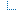
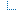

Downstream build view
| Downstream build view status |
  U_aegir_7.x-3.x-stable-to-unstable-deb-package build number 984 (Fri Mar 31 01:01:28 EDT 2017 - SUCCESS) U_aegir_7.x-3.x-stable-to-unstable-deb-package build number 984 (Fri Mar 31 01:01:28 EDT 2017 - SUCCESS)
|

| Downstream build view status |
 U_aegir_7.x-3.x-stable-to-unstable-deb-package build number 984 (Fri Mar 31 01:01:28 EDT 2017 - SUCCESS)
|